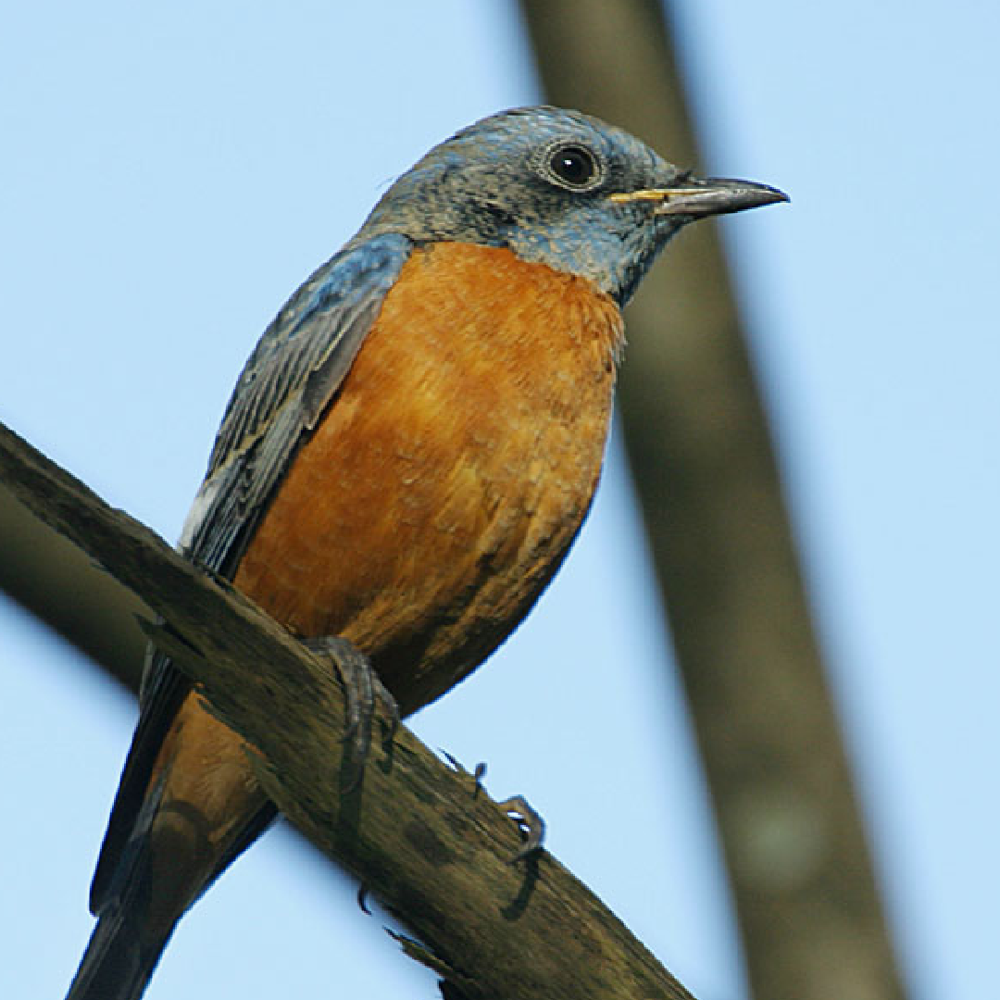
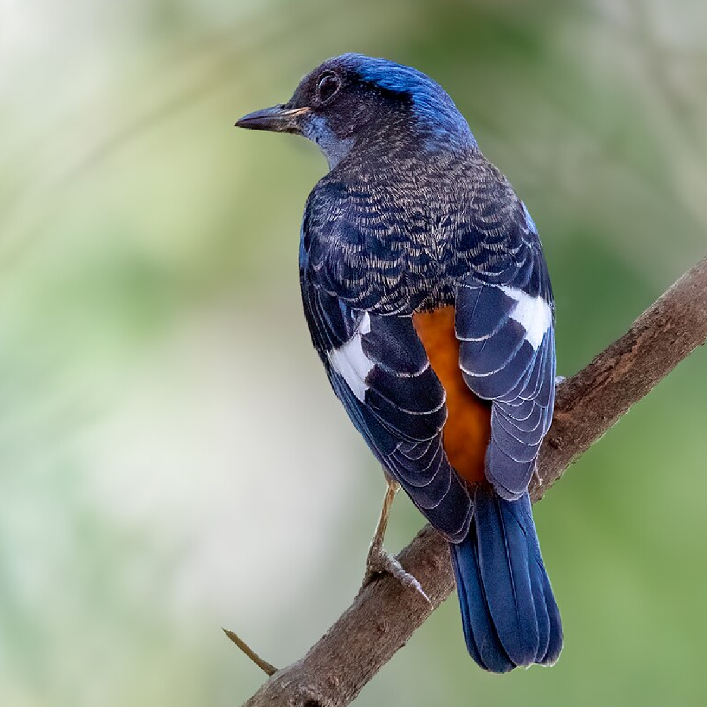

The Blue-capped Rock-Thrush is a strikingly colorful bird found in the Himalayan foothills and central India. It is admired for its vivid plumage and melodious, flute-like song.

This rock-thrush prefers wooded hillsides, forest edges, and rocky terrain. It breeds in summer, feeds on insects and berries, and migrates to southern India during winter months.
Read more about this bird and its wonderous characteristics on portals like E-Bird.